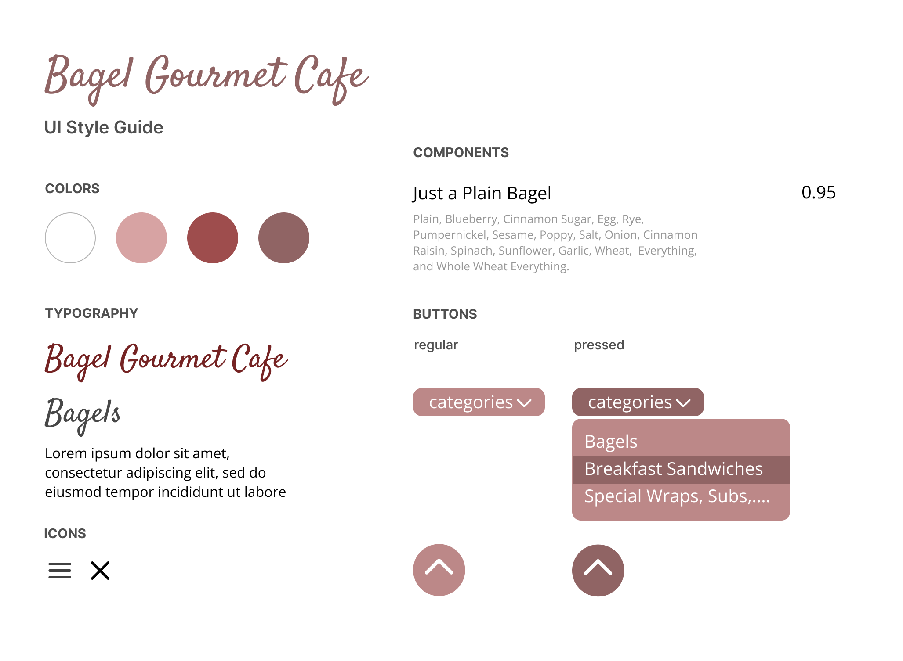
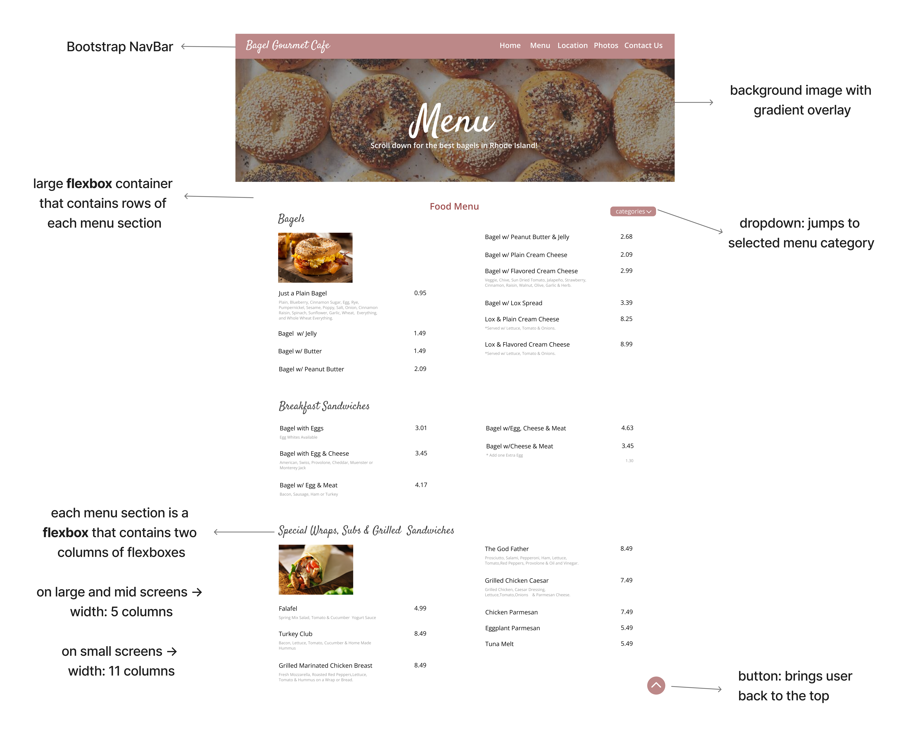
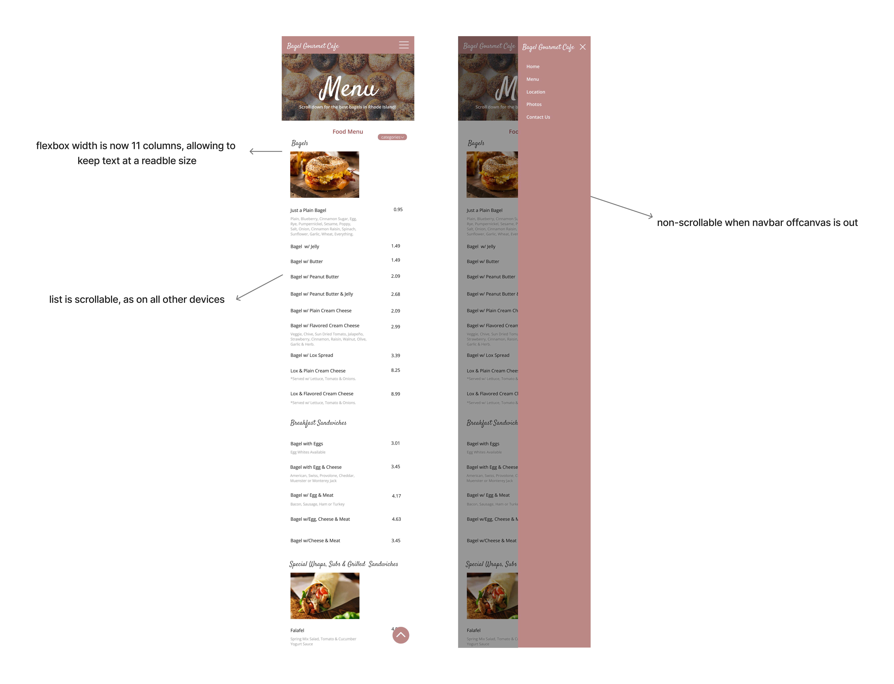
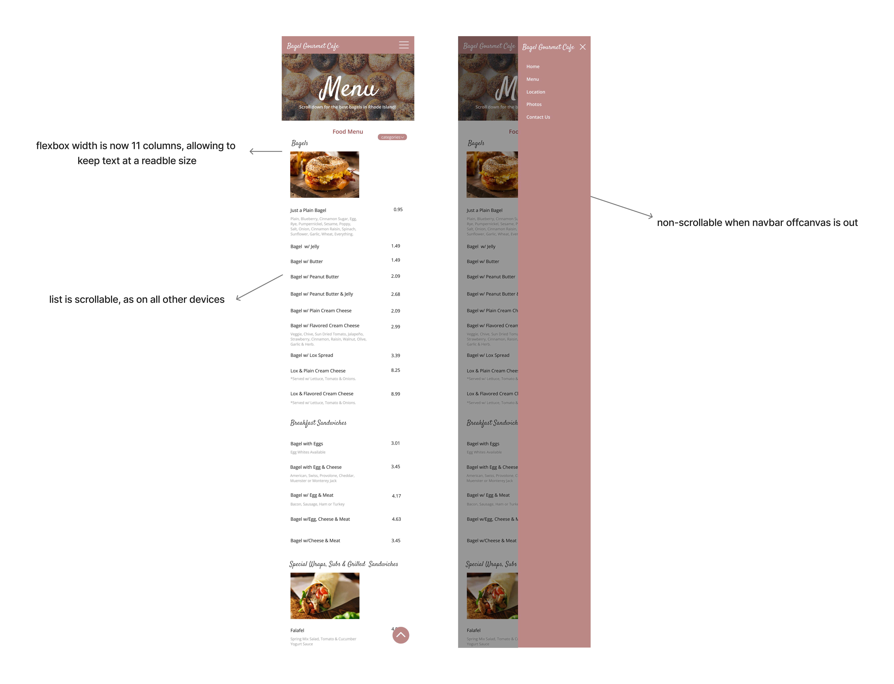

🥯 Responsive Redesign 🥯
read on to learn about my project!
🔍
About
In this project, I found a website to be improved, identified the key usability and accessibility issues, created lo-fi and hi-fi prototypes, and developed a responsive version of the website. Scroll down ⬇️ to read about more my process and the final product!
💻
Web Page

Bagel Gourmet Café ➡️ Menu
🤔 Why?
I chose this website and its Menu page because the design is barely responsive for smaller screen sizes, and defies much of a user’s mental model when they navigate the website. It is also far from being accessible and currently unable to adapt to the needs of various users.
🗝️
Key Issues
👍 Responsiveness

- When the screen shrinks, the page simply gets cut off horizontally, so you have to manually scroll to the end. On smaller devices, the page display simply shrinks, making the lettering too small to read
🧠 Conceptual vs Mental Model
- Some style choices like underlining make certain texts seem like links while they aren’t
- Navigation buttons change location based on the page a user is on. The user's mental model will likely expect it to stay in one location.
- Clicking on the logo does not take the user back to home page, which is now a part of most mental models of modern websites
🎨 Visual Design & Usability
- Bottom buttons blend in with the background, and so does the link randomly placed at the top left corner
- Layout of prices are offset with varying styles––some bolded, some not ➡️ very hard to read or compare prices
- Hard to tell which options belong to what menu item, since the only distinctions are underlined vs. non-underlined (sometimes italics and/or bolded) 😵💫
- The difference in font styles––sometimes serif, other times sans serif––of the same information type (i.e. availanble flavors/toppings) may leave the user confused what the difference could be
- Despite all the available space on the right, all contents are shifted to the left with very tight columns and small text. The margins are also missing in some text displays.
- The color scheme in some places offers little contrast, making elements like the links at the bottom very difficult to read
💛 Accessibility
- There is no alt text for the images, so screen readers cannot read them
- Only uses h4 and h5 elements, and no h1 is found ➡️ not enough hierarchy
- Language is never identified
- Poor color contrast
- There are empty headings, which can confuse screen readers
- Missing or uninformative page title
- No page regions are identified
- Non-link texts are underlined
- Texts overall are very small
- Layout tables are present: can cause reading/navigation order issues
I thought these accessibility alerts and findings were accurate. In total, I found there to be 6 Errors, 13 Contrast Errors, 149 Alerts, 52 null/empty alternative text, and 0 ARIA. Overall, this website was not nearly accessible as we would like it to be.
...so, how could I make this better?
📝
Lo-Fi Prototypes
first, I created three wireframes.
below are my lo-fi for laptop, iPad, and iPhone, created using Balsamiq.
Here, I focused mainly on these key issues:
- poor readability due to confusing fonts, font styles, and small text size
- poor usability due to its menu layout ➡️
- difficult to distinguish between menu categories
- need to scroll through the entire page to find a menu category
- difficult to read or compare prices
- lack of responsiveness, especially when resizing a window
- accessibility issues––in particular the lack of alt tags & hierarchy, small text, etc.
✨
Hi-Fi Prototypes
next, I moved onto my hi-fi prototypes!
below are my UI style guide and my hi-fi for laptop, iPad, and iPhone.


 
